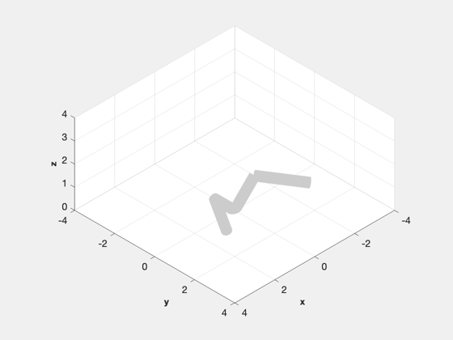
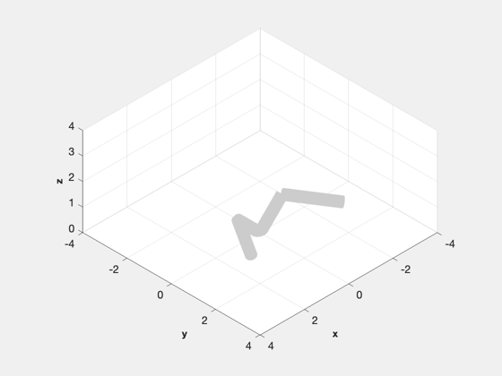

Multiarm Robot Demo
A robot with a branch. -------------------------------------------------------------------------
Contents
%-------------------------------------------------------------------------- % Copyright (c) 1999 Princeton Satellite Systems, Inc. % All rights reserved. %--------------------------------------------------------------------------
Simulation time control
%------------------------ tEnd = 10; nTest = 4; dT = 0.025; nSim = tEnd/dT+1; tPause = 0.1; % Seconds to pause each frame for the movie % Vectors from the hinges to the cm of each link %----------------------------------------------- c1 = [ 0; 0; 0.5]; c2 = [ 0; 1; 0]; c3 = [ 0; -1; 0]; % Vectors to the link tip. If there is a branch there will be more than % on vector %---------------------------------------------------------------------- r1 = [ 1 -1;0 0;1 1]; % The first link has two hinges r2 = [ 2; 0; 0]; r3 = [ -2; 0; 0]; % Transformation matrix at the base of the link %---------------------------------------------- R1 = eye(3); R2 = eye(3); R3 = eye(3); % Sliding friction data %---------------------- cF = struct('fStatic', [0;0;0],'kStatic', [1;1;1],... 'fCoulomb',[0;0;0],'kCoulomb',[1;1;1],... 'bViscous',[0;0;0]); % The initialization function uses parameter pairs. The ones starting with % name are links. Entering name creates a new link. All link parameters % must be specified before the next name %------------------------------------------------------------------------- h = RHSRobotInitialize( 'robot name','Multiarm Robot',... 'friction function', @FrictionSmooth,... 'friction data', cF,... 'name','Link1','mass',4,'radius',0.2,'center of mass',c1,'parent',0,'r parent',1,'hinge','prismatic','state',1,... % Link 1 'link vector',r1,'inertia',eye(3), 'transformation matrix',R1,... 'name','Link2','mass',6,'radius',0.2,'center of mass',c2,'parent',1,'r parent', 1,'hinge','revolute','state',2,... % Link 2 'link vector',r2,'inertia',eye(3), 'transformation matrix',R2,... 'name','Link3','mass',6,'radius',0.2,'center of mass',c3,'parent',1,'r parent', 2,'hinge','revolute','state',3,... % Link 3 'link vector',r3,'inertia',eye(3), 'transformation matrix',R3);
Simulation
%------------ x = [0;0;0;0; -0.1; 0.1]; % Run the simulation %------------------- t = dT*(0:(nSim-1)); xPlot = zeros(length(x),nSim); for k = 1:nSim % Plotting array %--------------- xPlot(:,k) = x; % Enter the motor torques into the dynamics model %----------------------------------------------- x = RK4( 'RHSRobot', x, dT, t(k), h ); end
Plot the results
%------------------ % Plot labels %------------ yL = {'l (m)' '\theta_1 (rad)' '\theta_2 (rad)' 'v (m/s)' '\omega_1 (rad/s)' '\omega_2 (rad/s)' }; [t,tL] = TimeLabl(t); Plot2D( t, xPlot, t, yL, 'Manipulator States' ); % Animate %-------- DrawRobot( 'initialize', h ) DrawRobot( 'update', xPlot, h, tPause ); %-------------------------------------- % $Id: 5bcff8f7dbcafab2a158cedd711c6bc4e0389408 $
 
